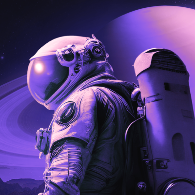

2023
Boost!

Segui outros rumos na jornada, sem recuar.
Não trabalhei no ramo de desenvolvimento, embora continuei tranalhando na área de TI. Depois de tanto tempo, após a pandemia e outras questões pessoais, sinto que agora é a minha hora de encarar novos desafios e fazer algo que, até então nem sabia que era capaz.
E por coincidência, este ano fui aprendendo ao Rocketseat, esta incrível plataforma. Uma pessoaa me recomendou a fazer o NLW da Rocketseat.
Resolvi acessar o site para ver como funciona. Gostei muito da proposta e metodologia. Comecei o Discover e desde então, estou aprendendo bastante!
Agora o céu é o limite!